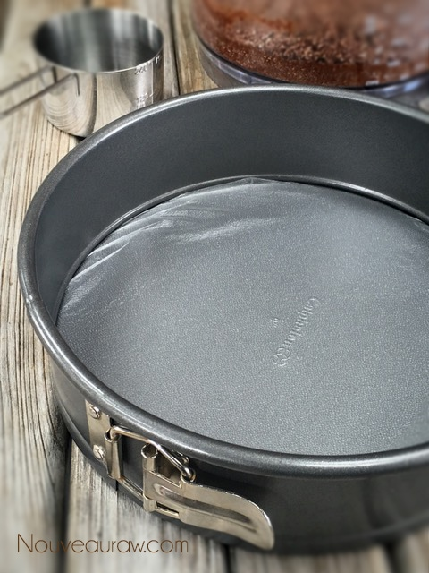
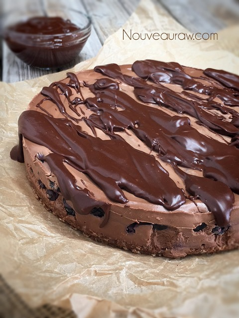
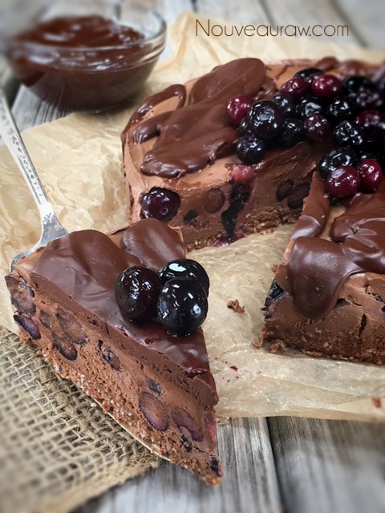

Deep Dark Chocolate Berry Cheesecake

~ raw, vegan, gluten-free ~
Warning: do not attempt to view, make, or devour this recipe if you do not like chocolate. Just saying. I thought it was only fair to forewarn you.
This crave-worthy raw cheesecake has a decadent foundation of deep rich chocolate, with juicy kisses of berries sprinkled into the creamy filling.
To top off this wonderful dessert you could allow a dreamy dark chocolate ganache to drizzle over the edges, pile fresh berries on top or give it a grand finally with whimsical chocolate curls. Death by chocolate comes to mind. hehe
Raw Cacao Butter…
is the pure oil of the cacao bean. It consists of healthy fats and is an excellent source of healthy omega-6 and omega-9 fatty acids, and also contains natural antioxidants. To read more about it, check out this (post) that I wrote about it. I also share a great tip on how to melt it with grace and ease.
Pick Your Berries…
You can pretty much use just about any berry with this cheesecake. I have used fresh blackberries and today blueberries. Feel free to use fresh or frozen… again, I have used both forms. If you use frozen, be sure to thaw and drain the liquid from the berries so it doesn’t get soupy when you add them to the batter. I hope you enjoy this recipe. Be sure to leave a comment below. Many blessings, amie sue
9″ springform pan
Crust:
- 1/2 cup raw Brazil Nuts (or almonds)
- 1/2 cup dried shredded coconut
- 1 Tbsp raw cacao powder
- 1/8 tsp Himalayan pink salt
- 2 Tbsp maple syrup
- 1 tsp vanilla extract
Filling:
Toppings (optional):
Preparation:
Crust:
- Process the Brazil nuts, coconut, cacao powder salt in a food processor, fitted with the “S” blade, until it becomes a fine meal (small pieces).
- Add the sweetener and vanilla until it is well mixed and sticks together when pinched.
- Be careful that you don’t over-process the nuts, or they will release too much oil.
- If it feels too dry, add 1 Tbsp of water until moist enough to stick together when pinched.
- Line the pan base with plastic wrap and press the crust mix into the Springform pan.
- To get an even crust, sprinkle the batter all around the bottom of the pan. Then press down gently.
- To create a smooth and clean crust, I use the base of a straight edge measuring cup to press it all down evenly. Clean any crumbs off of the sides of the pan.
- Tip: if you want to bring the crust up the edges of the pan, double the crust recipe.
Filling:
- Drain the soaked cashews and discard the soak water. Place in a high-speed blender.
- In a high-powered blender combine the following ingredients in this order; water, sweetener, cacao butter, coconut butter, cacao powder, extracts, salt, and cashews.
- Due to the volume and the creamy texture that we are going after, it is important to use a high-powered blender. It could be too taxing on a lower-end model.
- Blend until the filling is creamy smooth. You shouldn’t detect any grit. If you do, keep blending.
- This process can take 2-4 minutes, depending on the strength of the blender. Keep your hand cupped around the base of the blender carafe to feel for warmth. If the batter is getting too warm. Stop the machine and let it cool. Then proceed once cooled.
- Gently tap the pan on the counter to remove any air bubbles.
- Pour the batter into the pan and drop the berries in.
- Chill in the freezer for 4-6 hours and then in the fridge for 12 hours.
- Store the cheesecake in the fridge for 3-5 days or up to 3 months in the freezer. Be sure that they are well sealed to avoid fridge odors.
- Topping options – drizzle the ganache over the cheesecake and top with fresh berries.
The Institute of Culinary Ingredients™
- To learn more about maple syrup by clicking (here).
- What is raw cacao powder?
- For tips on working with raw cacao butter, click (here).
- What is Himalayan pink salt and does it really matter? Click (here) to read more about it.
- Is coconut butter the same as coconut oil? Click (here) to find out.
Always line the base of the Springform pan with plastic wrap. It
makes it very easy to transfer to a serving plate when the time comes.

I love the look of just drizzling the ganache over the pie…

Adding berries is just a bonus! :) Enjoy!

© AmieSue.com